General Notes
The Cross-Sector Totals sheet is where various quantities are totaled from the various model sectors, and certain modifications to cash flows are performed to prepare them for use in the input-output (I/O) model component of the EPS. Totaled quantities include emissions (by pollutant and converted to CO2e), electricity demand, fuel use, and cash flows for the nine cash flow entities (government, non-energy industries, labor and consumers, foreign entities, and five energy suppliers). Non-energy industry cash flows are further broken out into the ISIC codes (International System of Industrial Classification) used in the I/O model. The totals on this sheet are not the only way in which cross-sector impacts are tallied. For instance, expenditures broken down by type of expenditure are calculated on the Cost Outputs sheet.
Pollutants and CO2e
The Energy Policy Simulator (EPS) totals the quantities of 12 pollutants emitted (or sequestered) from eight sectors: transportation, electricity, industry (including agriculture), buildings, district heat, hydrogen supply, LULUCF, and geoengineering. Industry sector emissions here do not include leakage (induced emissions in other countries/regions); see the Industry Sector page for details about leakage. Pollutants are simply summed, a quantization term is applied to avoid rounding error, then GWP values (using the user-selected GWP timeframe) are applied to convert them to CO2e. The following screenshot shows the relevant structure:
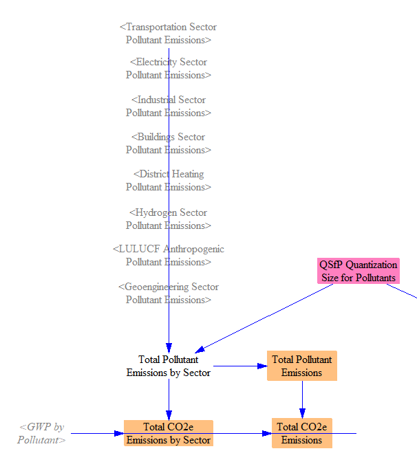
Electricity Demand
There are six sectors that can demand electricity: transportation, buildings, industry, hydrogen supply, district heat, and geoengineering. The demand from these sectors is summed, and the sum is used as an input to the Electricity Sector of the model. The following screenshot shows the relevant structure:
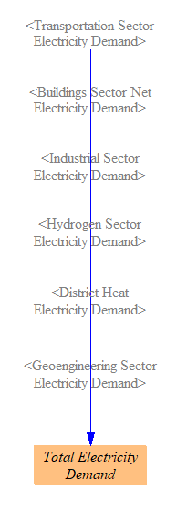
Fuel Use and Primary Energy
We total fuel and primary energy use, which is primarily used in various outputs, though it also serves as an input to the calculations of fuel imports and exports on the Fuels sheet. First, we total all energy use by all sectors, and then we filter out non-primary fuels (such as electricity, district heat, and hydrogen, as well as the fuel-less electricity sources, such as hydro, wind, solar, and geothermal) to obtain Total Primary Fuel Use by Sector. We sum across sectors to obtain Total Primary Fuel Use.
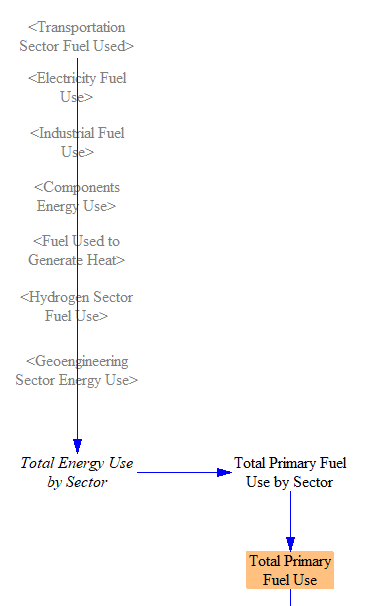
Finally, we convert fuel use to total primary energy. Since we’re already working in energy units that are the same across fuels, our only task is to convert the electricity that was generated via renewables (including distributed RE resources) to primary energy. This was done on the Electricity Sector sheet, so we take those values and use them to fill in here for the renewable sources. We continue to report no value for energy carriers (electricity and heat) to avoid double-counting in the primary energy total. See the following screenshot for the structure:
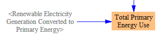
Change in Carbon and Fuel Tax Revenues
Change in Carbon Tax Revenue
We calculate the change in carbon tax revenue due to the policy package, which is one of the inputs used in the input-output model, where the way in which government acquires or uses this change in revenue can be set.
We obtain the carbon tax revenue from each sector by multiplying the fuel use in that sector by the carbon tax amount per unit energy for that fuel and sector. (Different sectors may have different carbon tax rates, and different fuels have different carbon intensities. The carbon tax amounts per unit energy are calculated on the Fuels sheet.) For the industry sector, we also have to add in any carbon tax levied on industrial process emissions (which will be zero unless the carbon tax is configured to apply to process emissions).
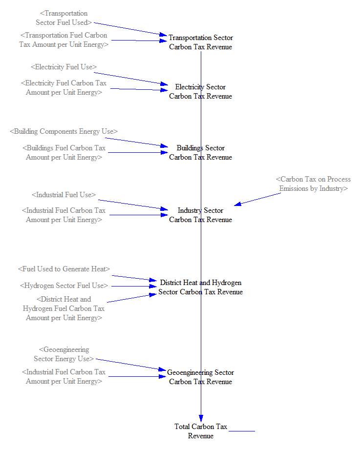
We then take the difference between this amount and its equivalent in the BAU case.
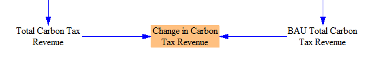
Change in Fuel Tax Revenue
The change in revenue from fuel taxes is calculated in a similar way to the change in carbon tax revenue (except industrial process emissions play no role here). We multiply the fuel used in each sector by the fuel tax amount per unit energy applying to that fuel (as calculated on the Fuels sheet) and add across sectors.
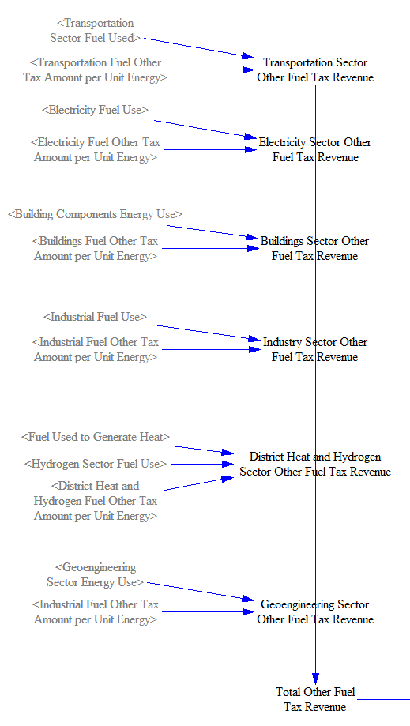
We then take the difference between the BAU and policy cases to find the change due to the policy package.
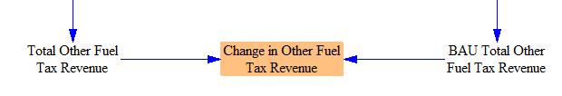
Changes in Cash Flows
The model tracks changes in cash flow for nine main actors (sometimes called “cash flow entities”): government, non-energy industries, labor and consumers, foreign entities, and five types of energy suppliers (electricity, coal, natural gas and petroleum, biomass and biofuel, and other). Additionally, the model tracks cash flow impacts by ISIC code, which breaks apart the non-energy industries cash flow entity into 18 ISIC codes and also tracks an additional 18 ISIC codes, for a total of 36 ISIC codes. The break-out of five types of energy supplier within the EPS is more detailed than the available data by ISIC code (which, for example, groups all fossil fuel extraction businesses together, not distingusihing coal from oil and gas), so we retain the five energy suppliers within the “cash flow entities” subscript, instead of simply relying entirely on ISIC codes to track cash flows for all industries. The detailed break-outs by ISIC code and by cash flow entity allows the EPS to produce outputs that show how policy packages affect specific segments of the economy and society.
Changes in Non-Energy Industry Cash Flows by ISIC Code
As the cash flow entities subscript is already sufficient to track the direct financial impacts of policies for all entities except for the detailed break-out of non-energy industries, at this stage, we primarily use ISIC codes to subdivide the cash flows assigned to the “non-energy industries” cash flow entity. (Later, in the input-output model, we will use some of the properties of the energy industry ISIC codes to estimate indirect impacts of changes in energy industry output.)
The first step is to total the change in non-energy industry expenditures by ISIC code. Non-energy industry expenditures were already assigned to ISIC codes within each sector, so it is straightforward to total them here.
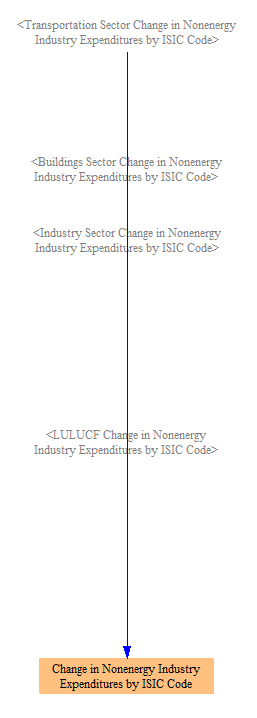
We also track the change in revenues by ISIC code and by cash flow entity. Revenue assignments to specific ISIC codes were already made in various sectors (transportation, buildings, etc.), but labor and tax shares of the assignments to non-energy industries were not separated out within the sectors. We will account for the effects of changes in output by ISIC code on government and household spending the input-output model sheet, using variables that are part of a feedback loop from the IO model outputs. Therefore, we do not need to separate out labor and tax shares of industry revenue upstream of the IO model. (The IO model expects the total change in output, which is based on revenue, including revenue that ultimately is paid to workers or paid as taxes. Worker salaries and taxes paid still contribute to that industry’s value added and hence to its economic output.) The share of each ISIC code supplied by foreign entities is also separated out inside the IO model.
We also allocate any change in interest paid on the national debt to nonenergy industries at this stage - for more on this, see the documentation page on the input-output model.
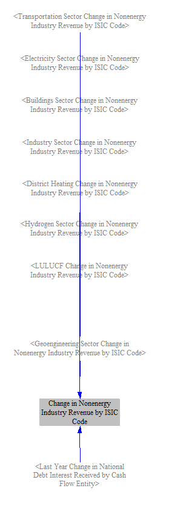
We add the direct (first-order) changes in revenue and changes in expenses to obtain the direct changes in cash flow for each non-energy industry, broken out by ISIC code. In other words, this is the direct impact of the user’s selected policies on the cash available to each industry segment. We do not actually use this variable within the IO model (because the IO model requires the change in output, not the change in cash flow or net income, for each industry), but we calculate it here for completeness and for use in the debugging assistance sheet.
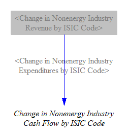
Summing Changes in Expenditures and Revenues
The next step is to sum direct, policy-driven changes in expenditures and revenues for each cash flow entity across all sectors and other model components that cause direct changes in expenditures and revenues. Expenditures are divided into energy expenditures and non-energy expenditures in each model sector, so we total them separately here, so we can represent changes in these types of expenditures as separate lines on output graphs. We apply a Quantization Size for Cash Flows to dampen rounding error.
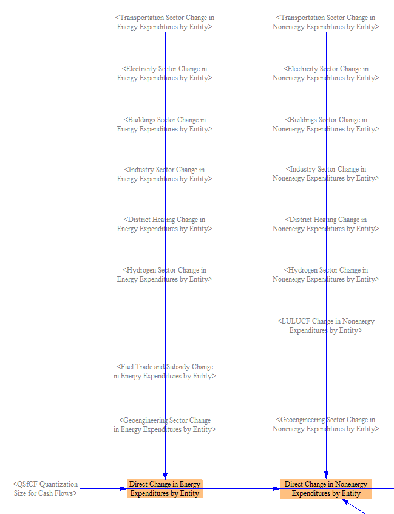
Similarly, we sum changes in revenues for each cash flow entity across all sectors.
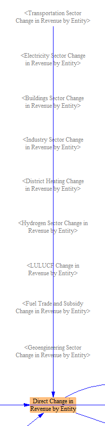
We also assign changes in national debt interest payments, with expenses paid by government and revenues for those entities that own government debt. (The interest received by the “non-energy industries” cash flow entity was allocated to ISIC codes earlier on this sheet.)
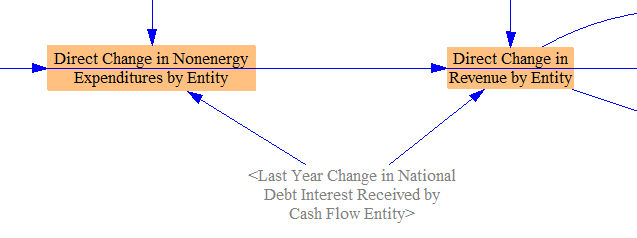
We know how much of the output of each energy industry and non-energy industry was purchased by “foreign entities,” so we are able to subdivide the change in revenue by entity into change in export revenue and change in domestic revenue. We break this out here to enable us to show this revenue breakdown in output graphs.
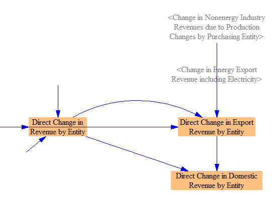
Our final step is to sum the changes in expenditures (energy and non-energy) and the changes in revenues for each cash flow entity to find the change in direct (first-order) cash flow for that entity. In other words, this is the change in cash available to each entity directly caused by the policy package. This is analogous to the sum of changes in expenditures and revenues by ISIC code calculated above, and it is one of our important inputs to the I/O model.
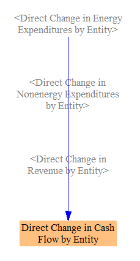
For the next steps in the calculation of financial policy impacts, see the documentation page on the input-output model.